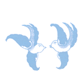

Legend of the Blue Willow...
Long ago in China lived a Mandarin and his daughter, Koong-shee. Koong-shee fell in love with a commoner, a man named Chang, and their love grew as they met beneath a willow tree in the palace garden. When the Mandarin discovered their secret, he banished Chang and imprisoned Koong-shee by encircling the palace with a zigzag fence.
Soon the Mandarin promised Koong-shee to another, and the marriage date was set. A great feast was held to celebrate, but afterward, when everyone had fallen asleep, Chang crept into the palace and fled with Koong-shee.
The Mandarin awoke and pursued the couple across a little bridge that spans the river. The lovers escaped, but soon the Mandarin discovered where they were hiding and sent his men to kill the couple. The men came upon Chang as he was working his fields and killed him. Koong-shee, who witnessed the entire scene from afar, rushed into the pavilion and set it afire. She was determined to be with Chang in death as she had been in life.
The gods, looking down on the tragedy, took pity on the lovers and transformed their souls into a pair of immortal lovebirds to forever live in the pagoda.
We can still see Chang and Koong-shee flying over the willow tree where they first pledged their love. Their story lives forever on the Blue Willow pattern.
